Introduction to Reinforcement Learning
What is reinforcement learning?
1 - What is reinforcement learning?
Different types of machine learning depending on the feedback
Supervised learning: the correct answer (ground truth) is provided to the algorithm, the prediction error drives learning directly.
Unsupervised learning: no answer is given to the system, the learning algorithm extracts a statistical model from raw inputs.
Reinforcement learning: an estimation of the correctness of the answer is provided by the environment through the reward function.
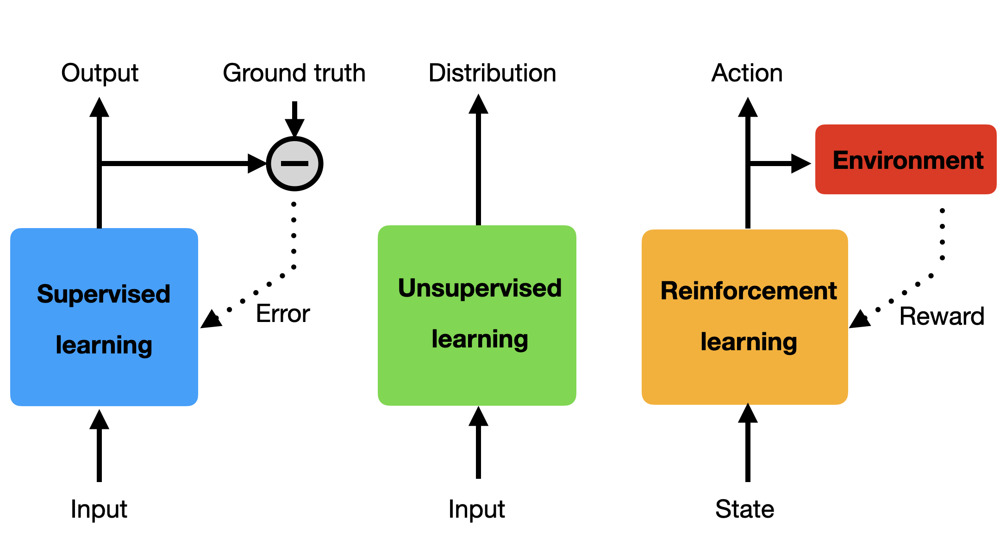
A brief history of reinforcement learning
Early 20th century: Animal behavior, psychology, operant conditioning
- Ivan Pavlov, Edward Thorndike, B.F. Skinner
1950s: Optimal control, Markov Decision Process, dynamic programming
- Richard Bellman, Ronald Howard
1970s: Trial-and-error learning
- Marvin Minsky, Harry Klopf, Robert Rescorla, Allan Wagner
1980s: Temporal difference learning, Q-learning
- Richard Sutton, Andrew Barto, Christopher Watkins, Peter Dayan
2013-now: Deep reinforcement learning
- Deepmind (Mnih, Silver, Graves, Hassabis…)
- OpenAI (Sutskever, Schulman…)
- Berkeley (Sergey Levine)
The RL bible
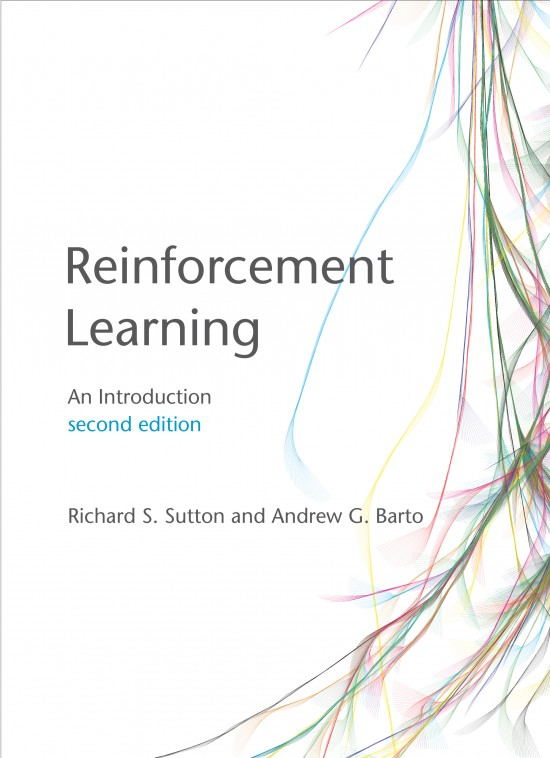
@Sutton1998 . Reinforcement Learning: An Introduction. MIT Press.
@Sutton2017 . Reinforcement Learning: An Introduction. MIT Press. 2nd edition.
Operant conditioning
Reinforcement learning comes from animal behavior studies, especially operant conditioning / instrumental learning.
Thorndike’s Law of Effect (1874–1949) suggested that behaviors followed by satisfying consequences tend to be repeated and those that produce unpleasant consequences are less likely to be repeated.
Positive reinforcements (rewards) or negative reinforcements (punishments) can be used to modify behavior (Skinner’s box, 1936).
This form of learning applies to all animals, including humans:
Training (animals, children…)
Addiction, economics, gambling, psychological manipulation…
Behaviorism: only behavior matters, not mental states.
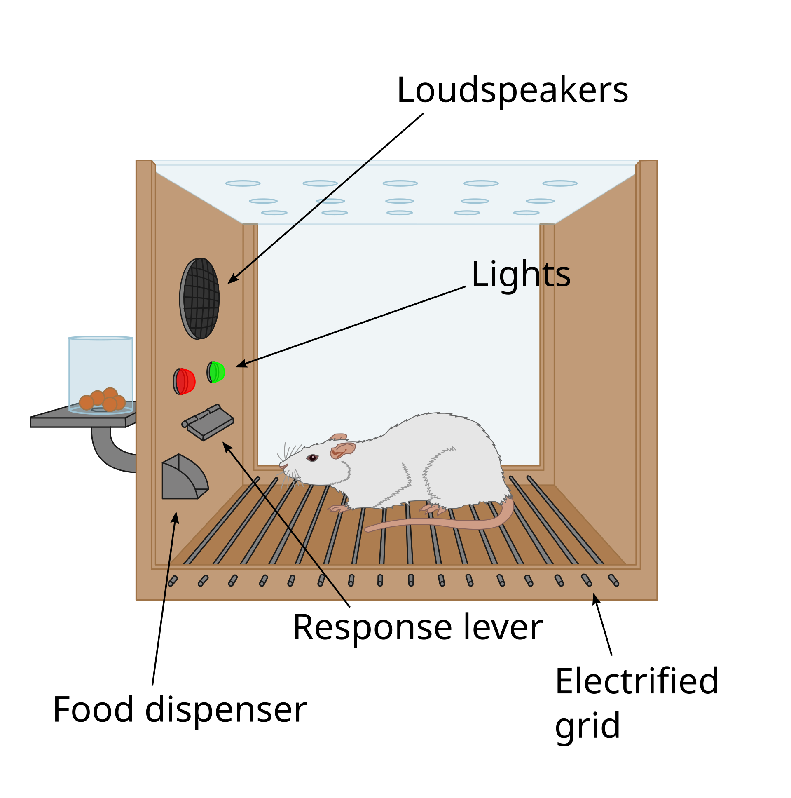
Operant conditioning
{{< youtube y-g2OmRXb0g >}}Trial and error learning
The key concept of RL is trial and error learning: trying actions until the outcome is good.
The agent (rat, robot, algorithm) tries out an action and observes the outcome.
If the outcome is positive (reward), the action is reinforced (more likely to occur again).
If the outcome is negative (punishment), the action will be avoided.
After enough interactions, the agent has learned which action to perform in a given situation.
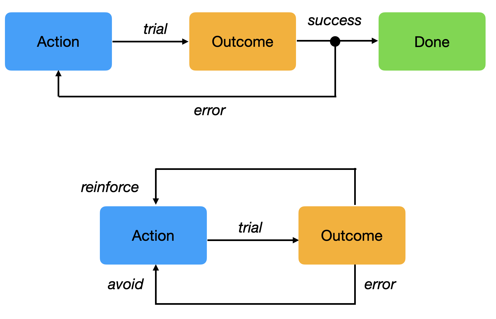
Trial and error learning
The agent has to explore its environment via trial-and-error in order to gain knowledge.
The agent’s behavior is roughly divided into two phases:
The exploration phase, where it gathers knowledge about its environment.
The exploitation phase, where this knowledge is used to collect as many rewards as possible.
The biggest issue with this approach is that exploring large action spaces might necessitate a lot of trials (sample complexity).
The modern techniques we will see in this course try to reduce the sample complexity.
The agent-environment interface
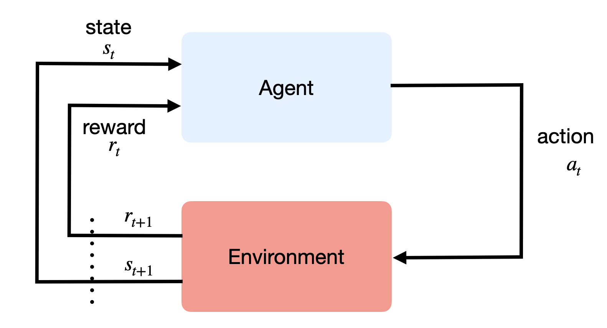
The agent and the environment interact at discrete time steps: \(t\)=0, 1, …
The agent observes its state at time t: \(s_t \in \mathcal{S}\)
It produces an action at time t, depending on the available actions in the current state: \(a_t \in \mathcal{A}(s_t)\)
It receives a reward according to this action at time t+1: \(r_{t+1} \in \Re\)
It updates its state: \(s_{t+1} \in \mathcal{S}\)
- The behavior of the agent is therefore is a sequence of state-action-reward-state \((s, a, r, s')\) transitions.

- Sequences \(\tau = (s_0, a_0, r_1, s_1, a_1, \ldots, s_T)\) are called episodes, trajectories, histories or rollouts.
The agent-environment interface
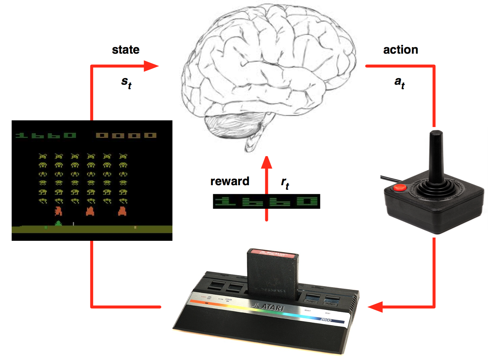
Environment and agent states
The state \(s_t\) can relate to:
the environment state, i.e. all information external to the agent (position of objects, other agents, etc).
the internal state, information about the agent itself (needs, joint positions, etc).
Generally, the state represents all the information necessary to solve the task.
The agent generally has no access to the states directly, but to observations \(o_t\):
\[ o_t = f(s_t) \]
Example: camera inputs do not contain all the necessary information such as the agent’s position.
Imperfect information define partially observable problems.
Policy
What we search in RL is the optimal policy: which action \(a\) should the agent perform in a state \(s\)?
The policy \(\pi\) maps states into actions.
- It is defined as a probability distribution over states and actions:
\[ \begin{aligned} \pi &: \mathcal{S} \times \mathcal{A} \rightarrow P(\mathcal{S})\\ & (s, a) \rightarrow \pi(s, a) = P(a_t = a | s_t = s) \\ \end{aligned} \]
- \(\pi(s, a)\) is the probability of selecting the action \(a\) in \(s\). We have of course:
\[\sum_{a \in \mathcal{A}(s)} \pi(s, a) = 1\]
- Policies can be probabilistic / stochastic. Deterministic policies select a single action \(a^*\)in \(s\):
\[\pi(s, a) = \begin{cases} 1 \; \text{if} \; a = a^* \\ 0 \; \text{if} \; a \neq a^* \\ \end{cases}\]
Reward function
The only teaching signal in RL is the reward function.
The reward is a scalar value \(r_{t+1}\) provided to the system after each transition \((s_t,a_t, s_{t+1})\).
Rewards can also be probabilistic (casino).
The mathematical expectation of these rewards defines the expected reward of a transition:
\[ r(s, a, s') = \mathbb{E}_t [r_{t+1} | s_t = s, a_t = a, s_{t+1} = s'] \]
Rewards can be:
dense: a non-zero value is provided after each time step (easy).
sparse: non-zero rewards are given very seldom (difficult).
Returns
The goal of the agent is to find a policy that maximizes the sum of future rewards at each timestep.
The discounted sum of future rewards is called the return:
\[ R_t = \sum_{k=0}^\infty \gamma ^k \, r_{t+k+1} \]
Rewards can be delayed w.r.t to an action: we care about all future rewards to select an action, not only the immediate ones.
Example: in chess, the first moves are as important as the last ones in order to win, but they do not receive reward.
Supervised learning
Correct input/output samples are provided by a superviser (training set).
Learning is driven by prediction errors, the difference between the prediction and the target.
Feedback is instantaneous: the target is immediately known.
Time does not matter: training samples are randomly sampled from the training set.
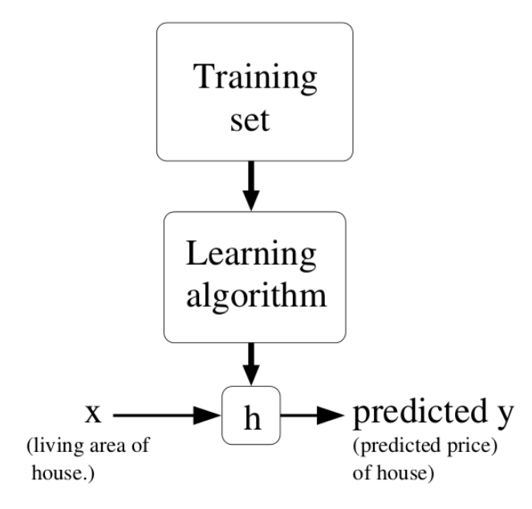
Reinforcement learning
Behavior is acquired through trial and error, no supervision.
Reinforcements (rewards or punishments) change the probability of selecting particular actions.
Feedback is delayed: which action caused the reward? Credit assignment.
Time matters: as behavior gets better, the observed data changes.
2 - Applications of RL
Optimal control
Pendulum
Goal: maintaining the pendulum vertical.
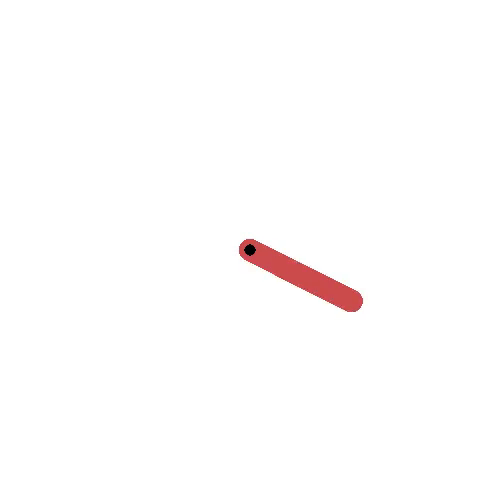
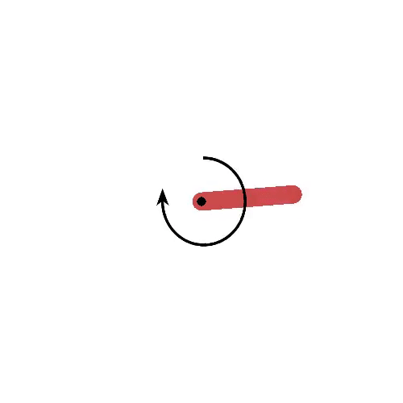
States: angle and velocity of the pendulum.
Actions: left and right torques.
Rewards: cosine distance to the vertical.
Optimal control
Cartpole
Goal: maintaining the pole vertical by moving the cart left or right.
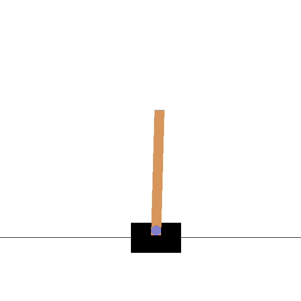
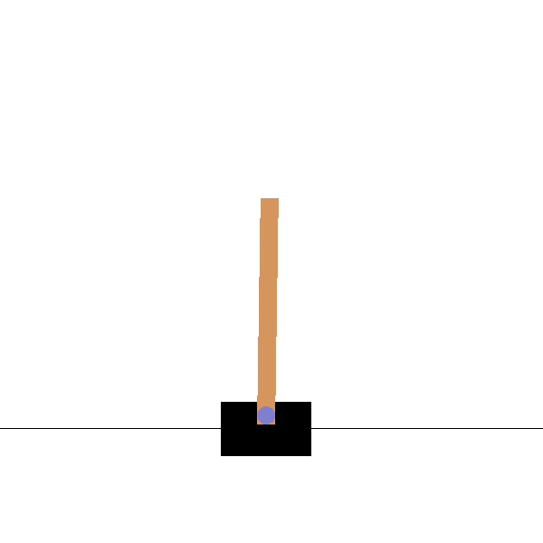
States: position and speed of the cart, angle and velocity of the pole.
Actions: left and right movements.
Rewards: +1 for each step until failure.
Optimal control
{{< youtube XiigTGKZfks >}}gymnasium library for RL environments
Board games (Backgammon, Chess, Go, etc)
TD-Gammon (Tesauro, 1992) was one of the first AI to beat human experts at a complex game, Backgammon.
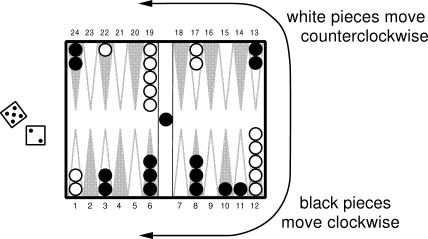
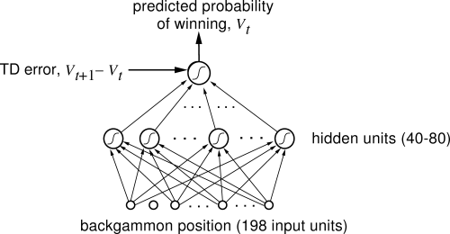
States: board configurations.
Actions: piece displacements.
Rewards: +1 for game won, -1 for game lost, 0 otherwise. sparse rewards
Deep Reinforcement Learning (DRL)
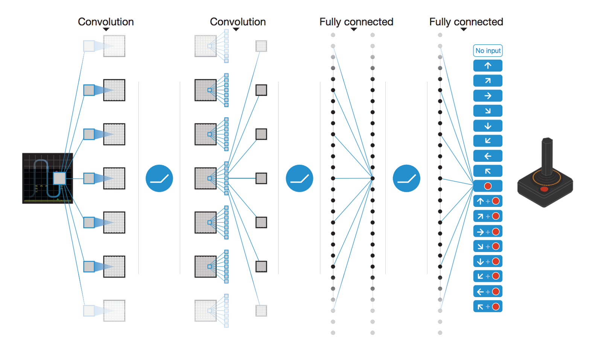
Classical tabular RL was limited to toy problems, with few states and actions.
It is only when coupled with deep neural networks that interesting applications of RL became possible.
Deepmind (now Google) started the deep RL hype in 2013 by learning to solve 50+ Atari games with a CNN.
Atari games
- States:
pixel frames.
- Actions:
button presses.
- Rewards:
score increases.
Simulated cars
- States:
pixel frames.
- Actions:
direction, speed.
- Rewards:
linear velocity (+), crashes (-)
Parkour
- States:
joint positions.
- Actions:
joint displacements.
- Rewards:
linear velocity (+), crashes (-)
AlphaGo

AlphaGo was able to beat Lee Sedol in 2016, 19 times World champion.
It relies on human knowledge to bootstrap a RL agent (supervised learning).
The RL agent discovers new strategies by using self-play: during the games against Lee Sedol, it was able to use novel moves which were never played before and surprised its opponent.
Training took several weeks on 1202 CPUs and 176 GPUs.
AlphaGo
{{< youtube 8tq1C8spV_g >}}Dota2 (OpenAI)
{{< youtube eHipy_j29Xw >}}- 128,000 CPU cores and 256 Nvidia P100 GPUs on Google Cloud for 10 months ($25,000 per day)…
Starcraft II (AlphaStar)
Process control
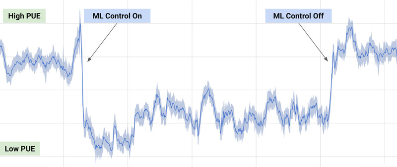
40% reduction of energy consumption when using deep RL to control the cooling of Google’s datacenters.
States: sensors (temperature, pump speeds).
Actions: 120 output variables (fans, windows).
Rewards: decrease in energy consumption
Magnetic control of tokamak plasmas
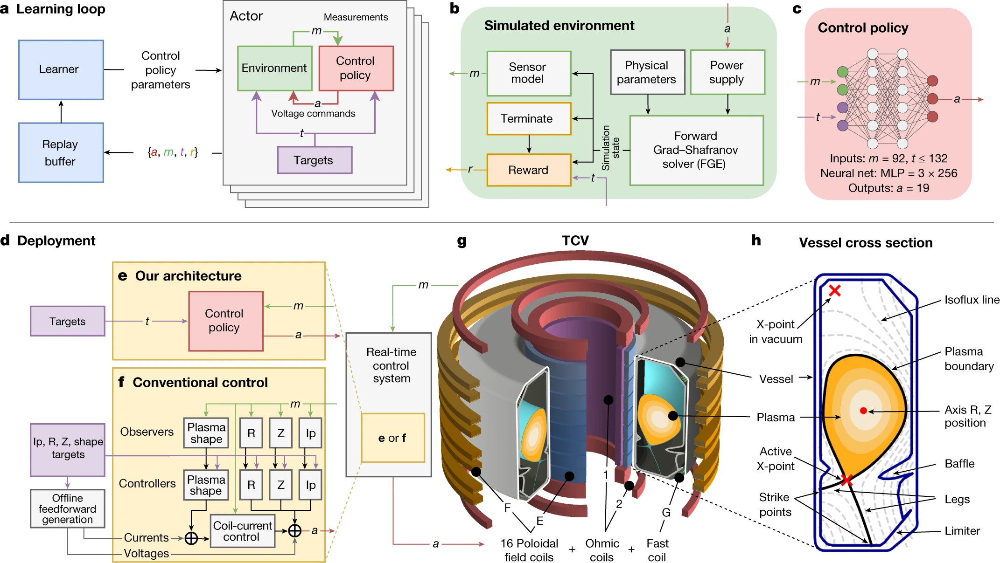
Chip design
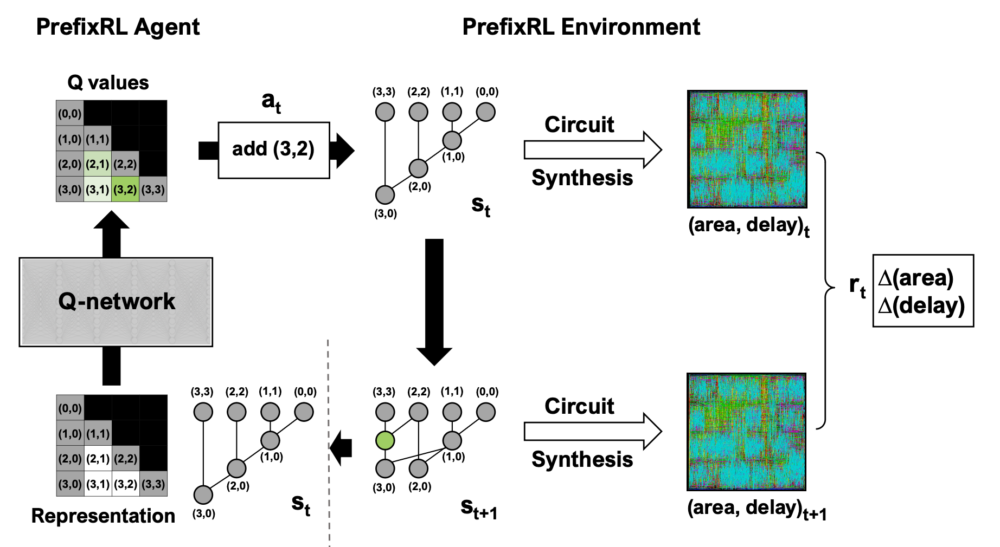
Real robotics
- States:
pixel frames.
- Actions:
joint movements.
- Rewards:
successful grasping.
Learning dexterity
- States:
pixel frames, joint position.
- Actions:
joint movements.
- Rewards:
shape obtained.
Autonomous driving
- States:
pixel frames.
- Actions:
direction, speed.
- Rewards:
time before humans take control.
Drone racing
{{< youtube fBiataDpGIo >}}ChatGPT

Take home messages
Deep RL is gaining a lot of importance in AI research.
Lots of applications in control: video games, robotics, industrial applications…
It may be AI’s best shot at producing intelligent behavior, as it does not rely on annotated data.
A lot of problems have to be solved before becoming as mainstream as deep learning.
Sample complexity is often prohibitive.
Energy consumption and computing power simply crazy (AlphaGo: 1 MW, Dota2: 800 petaflop/s-days)
The correct reward function is hard to design, ethical aspects. (inverse RL)
Hard to incorporate expert knowledge. (model-based RL)
Learns single tasks, does not generalize (hierarchical RL, meta-learning)
Plan of the course
Introduction
- Applications
- Crash course in statistics
Basic RL
- Bandits
- Markov Decision Process
- Dynamic programming
- Monte Carlo control
- Temporal difference, Eligibility traces
- Function approximation
- Deep learning
Model-free RL
- Deep Q-networks
- Beyond DQN
- Policy gradient, REINFORCE
- Advantage Actor-critic (A3C)
- Deterministic policy gradient (DDPG)
- Natural gradients (TRPO, PPO)
- Maximum Entropy RL (SAC)
Model-based RL
- Principle, Dyna-Q, MPC
- Learned World models
- AlphaGo
- Successor representations
Outlook
- Hierarchical RL
- Inverse RL
- Meta RL
- Offline RL
Suggested reading
- Sutton and Barto (1998, 2017). Reinforcement Learning: An Introduction. MIT Press.
http://incompleteideas.net/sutton/book/the-book.html
- Szepesvari (2010). Algorithms for Reinforcement Learning. Morgan and Claypool.
http://www.ualberta.ca/∼szepesva/papers/RLAlgsInMDPs.pdf
- CS294 course of Sergey Levine at Berkeley.
http://rll.berkeley.edu/deeprlcourse/
- Reinforcement Learning course by David Silver at UCL.